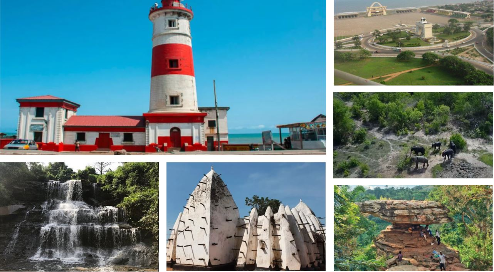
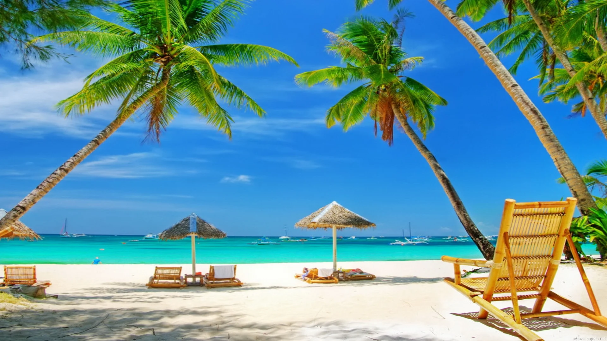
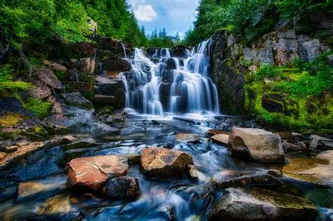
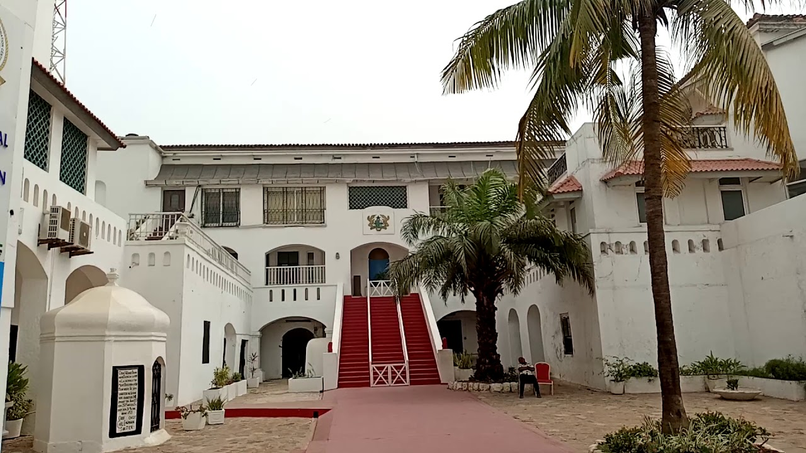

From breathtaking waterfalls and golden beaches to vibrant cities, national parks and centuries-old castles, Ghana offers unforgettable experiences for every traveller. Explore our culture, enjoy delicious local cuisine and discover why Ghana is called the Gateway to Africa.

Ghana is one of Africa's friendliest destinations, famous for its warm hospitality, peaceful environment and rich cultural heritage. Visitors can enjoy beautiful coastlines, wildlife reserves, historical monuments and colourful festivals throughout the year.
Whether you love adventure, history or relaxation, Ghana provides an exciting experience for everyone. Every region has something unique waiting to be explored.

Enjoy relaxing moments at Labadi Beach, Busua Beach and Kokrobite while watching the beautiful sunset.

Visit Wli Falls and Boti Falls for amazing scenery, hiking adventures and fresh mountain air.

Explore Cape Coast Castle and Elmina Castle while learning about Ghana's remarkable history.
"Ghana is one of the most welcoming countries I've ever visited. Everything was amazing."
"I loved the waterfalls, beaches and the delicious local food."
"My family had an unforgettable holiday. We'll definitely visit again."
Email: visitghana@gmail.com
Phone: +233 20 123 4567
Location: Accra, Ghana